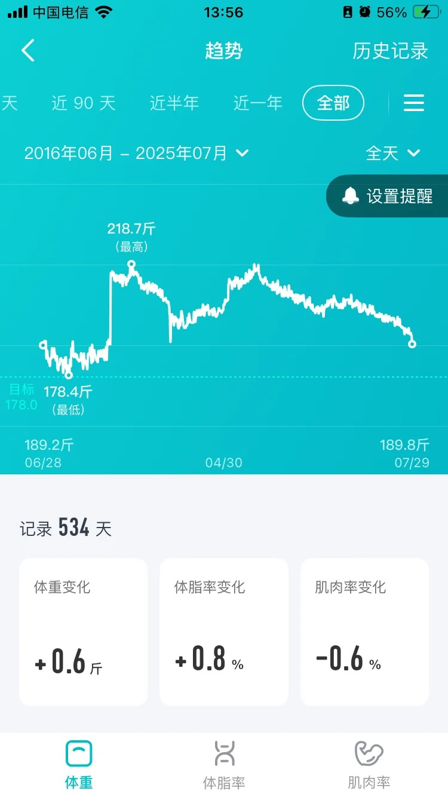
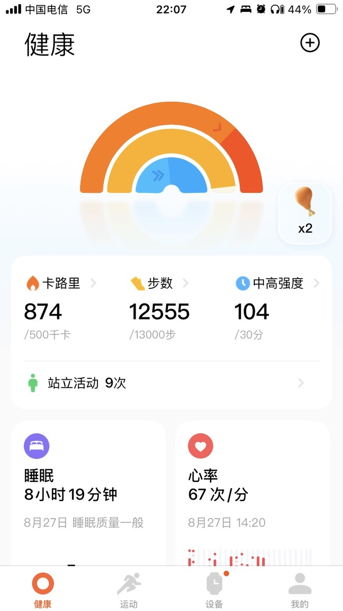
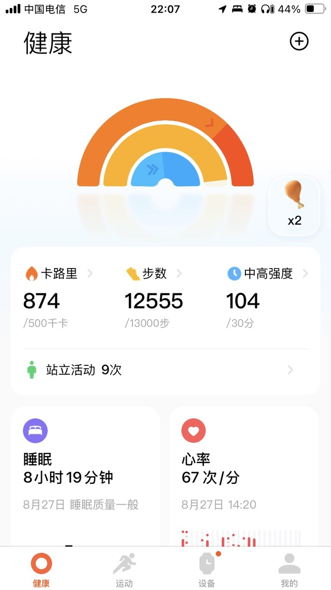
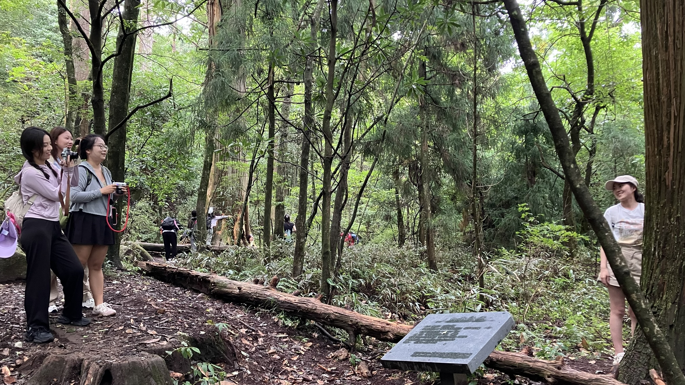
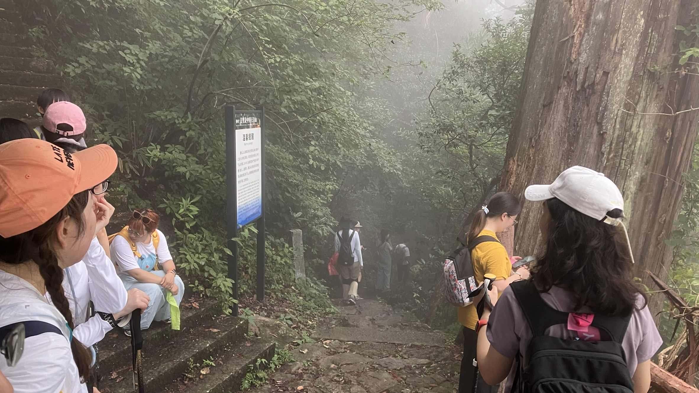
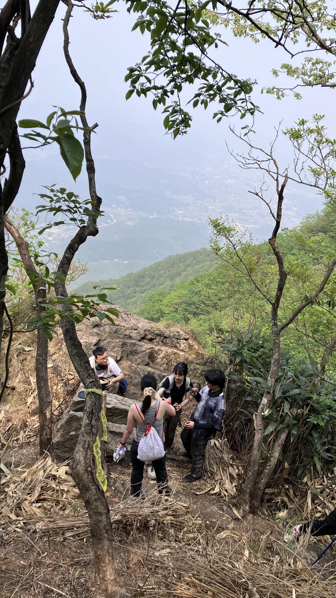
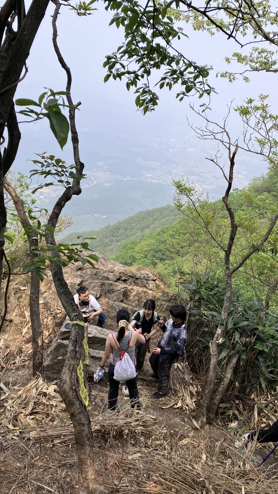

2025 Fitness Journey Record
本文最后更新于 2026年2月27日 上午
之前维护了一个实时记录贴，但因为想到哪写到哪，所以格式杂乱，现在重新整理为总结贴。
近况更新 （2026年3月）
跨越一年了，进步很大，减了 30+ 斤体脂也从 33.3% -> 24.4%，看样子等天气热起来，能系统锻炼的时候就可以追求前所未有的目标了。
最胖 218.6斤 体脂 33.3% 72.8斤（脂肪）
最瘦 179.4斤 体脂 23.3% 41.8斤（脂肪）
Weight
印象中最胖的时候是 230斤，但是体脂秤上的数据是 218斤，不知道是超过秤的上限，还是那时羞于记录。
2025年开年便是 205斤 了，已经减了 10斤，到达在时深圳一直挣扎的体重。
总的进度
| 时间 | 体重 | 体脂率 | 阶段说明 |
|---|---|---|---|
| 2024.10.04 | 218.6斤 | 33.3% | 即将再次失业，还不能遇见到会发生什么。 |
| 2024.12.03 | 210斤 | 31.7% | 【减】儿子出生时开始下定决心，开始一个多月就 -8斤。 |
| 2025.01.17 | 205斤 | 31.0% | 【减】 声网垮了，在家想起封控的时候也没饿死，遂开始极端克制饮食。 |
| 2025.02.27 | 199斤 | 29.3% | 【减】失业三个月极端少吃成果，但回过头来看知只是昙花一现罢了。 |
| 2025.05.25 | 200斤 | 29.1% | 【反弹】刚到百度贪图免费餐，同时也在内心放松警惕，中间甚至再次胖回 207斤 ，整顿后再突破 200斤。 |
| 2025.07.13 | 193.7斤 | 26.9% | 【减】后来发现秤会漂移，同时吸取之前的教训稳定下 195斤 一段时间后再记录！ |
| 2025.07.29 | 189.8斤 | 26.1% | 【减】首次下 190斤 减了 30斤 了，距离脱离“胖子”还有一半。 |
| 2025.09.02 | 189.7斤 | 26.2% | 【反弹】陷入了一个巨大的瓶颈期，不过想想刚到百度时的回落，好在意识到了，期待之后的记录。 |
| 2026.01.08 | 188.7斤 | 25.6% | 【减】稳住了，同时第一次 BMI 体脂同时离开“肥胖”，正式进入“偏胖”。 |
| 2026.02.23 | 186.9斤 | 24.4% | 【减】关注体脂，终于跨过之前最痛苦也用时最多的平台期阶段，更自信地朝着目标前进了。 |
本阶段的目标，也是大学最瘦的时候： 179.4斤 23.3% 41.8斤（脂肪）
稳定到 24% – 2026.02.23
186.9斤 24.4% 45.6斤（脂肪） 134.0斤（肌肉）
如果说之前体脂 25% ~ 26% 那段时期，是重复的痛苦迷茫和怀疑自己，那么这次当我年后第一次发现自己体脂直接来到 24% ，而且最近我并没有什么特意地进步带来的痛苦体验的时候，肯定是怀疑秤坏了或者像之前每次那样偶然误差空欢喜罢了。


因此又观察了一个星期，这次发现不仅体脂稳定下来，而且脂肪重量还在每天真的有序递减，才终于安心了。
现在有些时候也会像之前那样下地铁后步行 3公里，但现在已经可以不用护膝走跑，这是之前不敢想象的。
稳定“偏胖” – 2026.01.08
188.7斤 25.6% 48.2斤（脂肪） 133.0斤（肌肉）
有过振荡有过迷茫，体重最少达到过 186斤，综合看下来确实比之前大学时候都更瘦了，期待下一个目标的实现。
9月反弹期间更新
减肥方面，已经进入一个很大的平台期了，从8月再次减肥到 190斤 后，持续继续节食一个半月体重一直振荡就是不降，期间还饿出过眼冒金星的低血糖。
同时，在稍微放开吃一点东西的情况下，体重飙升，这才是真实的自己。
明显意识到需要调整方法了，正好探索一下现在体重的身体应该如何加上锻炼。
今年落实了以前只存在想象中的计划： 减肥 30+斤， 看来这次是真的能展开不一样的人生了。
最大的总结是少吃是饿不死人的，反而胃口会变小。保持热量差是减肥唯一且朴实无华的道理。
下 190斤 – 2025.07.29
189.8斤 26.1%
减了一半，还剩一半。 到 178斤 （最后 10斤）的时候我会好好休息一下。
已经回到大学时候体重，之后减的每一斤都是净赚。
在小红书上开贴记录了减肥的每个时间节点，下次再发就是下到 178斤 以后了。
同时解决了之前的一个疑惑： 我能做引体向上到底是因为力量变大了，还是减肥了。
考虑到误差，我是在 08.03日 后观察到体重稳定徘徊在 190斤 一段时间，才在此记录是真的又进入另一个阶段。
不过比起当天几乎快下 26% 的体脂，现在还是挺高的，几乎和上一个阶段没有变化。
快了，所有的指标都在趋向正常，等我下一个阶段之后，就从最开始只有两个指标正常到只有两个指标不正常了，加油，行百里者半九十。
195 斤 – 2025.07.13
193.7斤 6.9%
回过头看，还真的是非常科学的一个月5斤，一周一斤。
最近不知道是秤还是称重姿势问题，同一时刻有时能偏差一斤。
实际上前几天就飘下过 195斤，但为了保险，今天才进行记录。
现在对甜食或者甜味有本能的抵制了，有时想到小时候吃完饭还用炒菜的红油泡饭吃，都忘了从什么时候逐渐开始改变观念的。
200 斤 – 2025.05.25
2025.05.25 很巧啊，正好又是过了一个月，前几天心态还随着体重的尾巴反复起伏，在周五没胃口的限制饮食下，竟然一路高歌猛进，直接突破。
205 斤 – 2025.01.17
2025.04.24 近 30 天差不多是这个平均体重，这也是我开始适应张江工作后刚开始新的运动方式的起始体重。
同时，我在深圳一边锻炼一边狂吃也是这个体重，这4年里体重两度掉下 200 斤。
Running
工作日中饭，晚饭时间各跑一小时，争取早上和晚上下班也能各跑半小时。 要是能按照这个节奏跑下来，不出半年我就强的可怕。
以上是当时在张江的展望，不过并没有真的抽出那么多时间来跑步，反而是临近跑路的那一个月真的间歇执行了，从手环上看得出总共一万五千步，效果还是非常明显的，详见→ 6km 膝盖无感
6km 膝盖无感 – 2025.08.28
 

实在是太神奇了，高贵的浦西上班跑步回家的含金量。
减肥 30斤 后，一口气走跑 6km，不需要任何的辅助设备， 第二天别说左边膝盖痛了，连酸胀都没有。
日积月累，滴水石穿，看来之前半年在张江的大公园的散步让我已经习惯了间歇一天突破一万五千步的节奏。
真的之前在谷底的时候难以想象这种状态，接下来要做的就是选个状态好的时候，开始长距离的跑回去了。
想想我现在可以用上下班这个通勤距离来跑步，要是坚持个半年，进步该有多大！
update: 过几天发现实际上膝盖还是有感 不管是骑车还是走路的时候都感觉有点胀胀的感觉，但是比起以前两百多斤强有力到甚至刺痛的感觉，现在已经微弱到只能像当时骑车 20公里 到五角场之后的感觉，远远不似真的跑步的感觉强度。
10min – 2025.05.07
带护膝，一口气（慢）跑了10分钟，7分钟才开始喘40不适症状。
最近并没有完全坚持训练，且本次只是想稍微尝试，结果没想当进步如此巨大。
< 5min – 2025.04.24
没带护膝，跑55到 5 分钟，膝盖就开始痛。
Hiking
最初写这篇博客的时候，潇洒地写下准备两周一次的徒步，结果就像之前每一次计划一样根本没有展开，好在今年剩下的 1/4 里应该能努力维持一下这个节奏。
9.13 Take a walk in the park
真的很神奇，可能快十年没有体验过不到两百斤徒步的体验了。
想着稳妥起见，参加了多年前经常一起去的搞城市活动的非专业玩耍团的徒步活动，结果直接成了公园景区散步了。
全程没有一点波动，看着别人喘真的是一件很有成就感的事情。
膝盖有酸胀，滞胀但是就是没有刺痛的感觉，太幸福了，从来没有享受过这样的待遇。
4.20 Weakly fall behind
从上一次被开中缓过来，才发现自己用年来计算没有出去转过的日子了。
拖着两百多点斤的身体，走到后面左腿膝盖开始疼痛，完全落在后面，喘着气耽误这领队收尾。
 

Pull-Up（已完结）
2025.06.06 对我来说是个很重要的日子，本来只是心血来潮的想试一下，结果直接做到了人生中第一个标准引体向上。
现在已经习惯性的少吃，也不会像以前一样恐惧饥饿。
晚上出去吃的，但已经很克制不会“加餐”，消灭未完的食物了。回家称到体重也没有上到200.
前段时间一直晚上都难以入睡，终于从前天开始能正常睡觉。
三十而立，明白了这么多的道理，经过了这些年的实践后，现在要开始真正的人生。
众所周知 Wide-Grip Pull-Up 宽距正手引体 是最标准的，我现在有以下3条不同力道的弹力带，用于辅助。
{ "1": "2~15磅" , "2": "13~35磅" , "3": "25~65磅" }目标
- 年中 弹力带2 的辅助下做1个标准引体向上
- 年底 弹力带1 的辅助下做1个标准引体向上
- 预期 做1个标准引体向上
2025.05.22 无意中发现自己已经能用一种折中的中距半正手做引体向上，期待解锁标准引体向上，这是我从来没有达到过的境地。